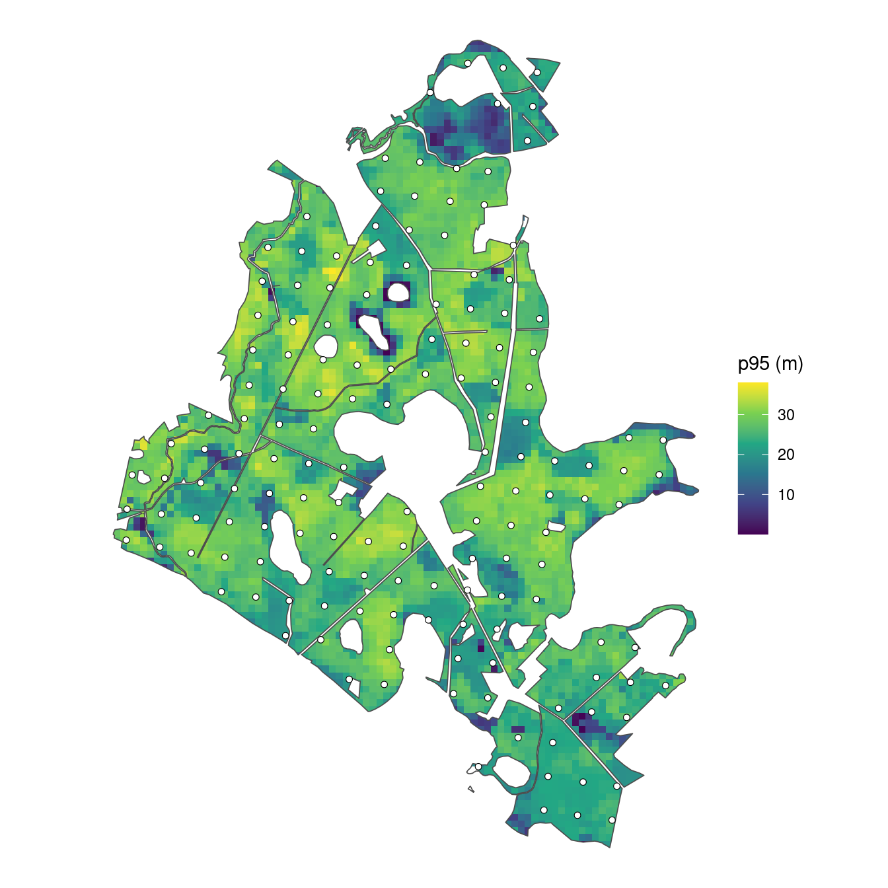
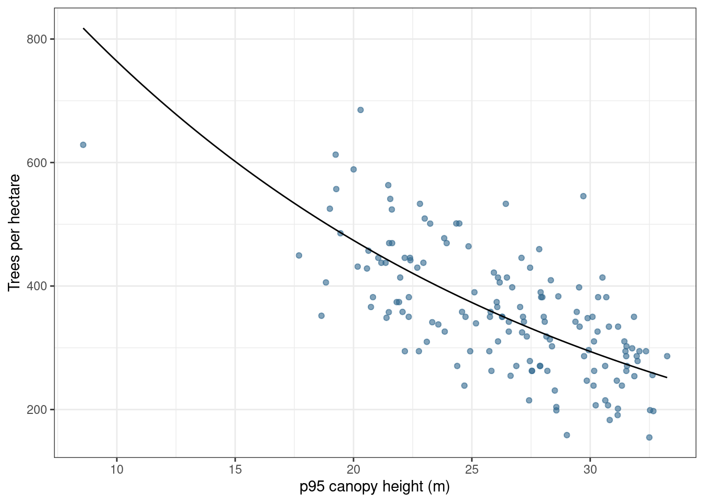

library(tidyverse)
library(sf)
forest <- st_read("data/forest.gpkg", quiet = TRUE)
forest_area_ha <- as.numeric(st_area(forest)) / 10000
# Read only the prepared columns so rerunning this script replaces the counts.
plots <- read_csv("data/plots.csv") |>
select(plot_id, stand_id, easting, northing, area, p95)
prediction <- read_csv("data/prediction.csv") |>
select(plot_id, stand_id, easting, northing, area, p95)This article constructs a simulated forest population for the plot-sampling examples. We use real forest boundaries and plot locations from Weisse Krug in Germany, together with canopy-height measurements derived from UAV-based LiDAR (Spitta et al. 2026).1 We simulate tree counts for three species and five diameter classes using the magnitude-composition model (Finley et al. 2026) to illustrate estimation of tree density, species composition, and stand tables.
The magnitude, composition, DBH, and species-by-DBH articles use this same population. The plot table contains the observations used for fitting. The prediction table covers the forest and also contains simulated counts, giving us known quantities against which to assess predictions.
Example data
Download the plot-sampling data (ZIP)
The introductory plot-sampling articles use this same archive. Extract it and use the folder containing data/ as your R working directory. The download includes the simulated counts, ready for fitting. The generation code below shows how to reproduce them; you can also proceed directly to the magnitude article.
Forest, plots, and prediction cells
The forest comprises 249 stands. Its 151 field plots are circles of radius 20 m, clipped to the forest boundary where necessary. The prediction grid contains 4,812 square cells, also clipped to the forest boundary. A full cell has the area of a full plot, approximately 0.126 ha, and a side length of 35.45 m. At each plot and prediction cell, p95 is the 95th percentile of canopy-height model values within its forested area, measured in meters.
We begin by reading the forest polygon and the plot and prediction tables. We also calculate the forest area with st_area(), converting square meters to hectares.
The forest covers 513.1 ha. The area column in each table gives the forested area of that plot or cell in hectares.
We map p95 across the prediction cells and add the plot locations.
prediction_cells <- st_read("data/prediction_cells.gpkg", quiet = TRUE) |>
inner_join(prediction |> select(plot_id, p95), by = "plot_id")
plot_locations <- st_as_sf(plots, coords = c("easting", "northing"),
crs = st_crs(forest))
ggplot() +
geom_sf(data = prediction_cells, aes(fill = p95), color = NA) +
geom_sf(data = forest, fill = NA, color = "grey30", linewidth = 0.3) +
geom_sf(data = plot_locations, shape = 21, fill = "white", color = "black",
size = 1.5, stroke = 0.3) +
scale_fill_viridis_c(name = "p95 (m)") +
coord_sf(datum = NA) +
theme_void() +
theme(legend.position = "right")
Canopy height varies across the forest. We use it as a predictor in each model component, with separate coefficients for overall density, species allocation, and diameter allocation within species.
Generate tree counts
Standardize canopy height
We standardize p95 using the plots’ mean and standard deviation, applying those same values to the prediction cells. The resulting predictor x has mean zero and standard deviation one among the plots. Centering makes the intercept refer to average canopy height, and scaling expresses the slope per one-standard-deviation increase. It can also help numerical stability during fitting. We combine plots and prediction locations to generate all counts together.
Overall tree density
For a unit with forested area hectares, expected tree density and total count follow
The negative-binomial mean is , and is its size parameter. For the simulated population, we set , , and . Expected density is therefore 350 trees/ha at average plot p95. A one-standard-deviation increase in p95 multiplies this density by , about 0.82, an 18% decrease. We use these parameter values to calculate expected densities and simulate counts at all plot and prediction locations.
expected_density is the mean density specified by the model; count is one simulated total count for that area. The realized density count / area varies around the expected density. We plot the simulated plot densities against p95, with the generating mean shown as a line.
relationship <- tibble(p95 = seq(min(plots$p95), max(plots$p95), length.out = 100)) |>
mutate(expected_density = exp(beta_0 + beta_1 * (p95 - p95_mean) / p95_sd))
locations |>
filter(dataset == "plot") |>
ggplot(aes(p95, count / area)) +
geom_point(alpha = 0.6, color = "#31688E") +
geom_line(data = relationship, aes(y = expected_density), color = "black") +
labs(x = "p95 canopy height (m)", y = "Trees per hectare") +
theme_bw()
Species allocation
We allocate the total among pine, oak, and birch using sequential probit probabilities. Pine is allocated first. Oak is allocated among the trees remaining after pine, and birch receives the rest. These binomial draws together produce a multinomial allocation of the total count.
Species allocation code
# Pine is allocated first, then oak, and birch receives the remainder.
species <- c("pine", "oak", "birch")
alpha_pine <- c(intercept = 0, slope = 0.5)
alpha_oak <- c(intercept = -0.5, slope = -0.5)
pi_pine <- pnorm(alpha_pine[1] + alpha_pine[2] * locations$x)
pi_oak <- pnorm(alpha_oak[1] + alpha_oak[2] * locations$x)
species_counts <- tibble(
pine = rbinom(nrow(locations), locations$count, pi_pine)
)
species_counts$oak <- rbinom(
nrow(locations), locations$count - species_counts$pine, pi_oak
)
species_counts$birch <- locations$count - rowSums(species_counts)The positive pine slope increases its share as p95 increases. The negative oak slope decreases its share of the trees remaining after pine. The three species counts always sum to the total count at that location.
DBH allocation within species
We next allocate each species’ trees among five diameter-at-breast-height (DBH) classes. Each class includes its lower boundary and excludes its upper boundary; 50+ includes all diameters at least 50 cm. Thus, all simulated trees have DBH of at least 10 cm.
Each species has its own intercepts and slopes. As with species allocation, we draw counts for successive classes from the trees remaining, with the largest class receiving the remainder.
DBH allocation code
dbh_classes <- c("10-20", "20-30", "30-40", "40-50", "50+")
# Each species has four allocation steps; the fifth class gets the remainder.
alpha_dbh <- tibble(
species = rep(species, each = 4),
dbh_class = rep(dbh_classes[1:4], times = 3),
intercept = c(-1, -0.5, 0, 0.5,
-0.5, 0, 0.5, 1,
0, 0.5, 1, 1.5),
slope = c(-0.4, -0.3, -0.2, -0.1,
-0.3, -0.3, -0.2, -0.2,
-0.2, -0.2, -0.1, -0.1)
)
categories <- expand_grid(species = species, dbh_class = dbh_classes) |>
mutate(category = paste(species, dbh_class, sep = ":"))
counts <- matrix(0L, nrow = nrow(locations), ncol = nrow(categories),
dimnames = list(NULL, categories$category))
for (s in species) {
coefficients <- alpha_dbh |> filter(species == s)
remaining <- species_counts[[s]]
for (b in 1:4) {
probability <- pnorm(coefficients$intercept[b] +
coefficients$slope[b] * locations$x)
category <- paste(s, dbh_classes[b], sep = ":")
counts[, category] <- rbinom(nrow(locations), remaining, probability)
remaining <- remaining - counts[, category]
}
counts[, paste(s, "50+", sep = ":")] <- remaining
}There are 15 species-by-DBH categories. Their counts sum to the total at each location. There are no spatial or group effects, and the DBH-class coefficients are specified directly without a smoothing model. Expected densities and allocations vary with p95.
Save the simulated population
We separate the plots and prediction cells and save their counts alongside their areas, coordinates, and predictors.
Known forest quantities
We calculate forest density by averaging the simulated cell densities, weighted by their areas. Boundary cells contribute less because they cover less land. This gives a grid approximation to forest density in trees/ha. Multiplying that density by the polygon’s forest area gives the corresponding forest total. The same calculation applies to each species-by-DBH category.
# Realized forest density comes from the simulated cell counts.
forest_density <- weighted.mean(prediction$count / prediction$area,
prediction$area)
forest_total <- forest_density * forest_area_ha
forest_table <- prediction |>
select(area, all_of(categories$category)) |>
pivot_longer(-area, names_to = "category", values_to = "count") |>
group_by(category) |>
summarise(density = weighted.mean(count / area, area), .groups = "drop") |>
left_join(categories, by = "category") |>
mutate(total = density * forest_area_ha) |>
select(species, dbh_class, density, total)The simulated forest density is 380.9 trees/ha, corresponding to approximately 195,426 trees over the forest area. These reference quantities come from the simulated counts, including their count variation.
We arrange the category densities as a stand table, with DBH classes in rows and species in columns.
forest_table |>
select(species, dbh_class, density) |>
pivot_wider(names_from = species, values_from = density) |>
mutate(dbh_class = factor(dbh_class, levels = dbh_classes)) |>
arrange(dbh_class) |>
select(dbh_class, pine, oak, birch) |>
knitr::kable(digits = 1, col.names = c("DBH class (cm)", "Pine", "Oak", "Birch"))| DBH class (cm) | Pine | Oak | Birch |
|---|---|---|---|
| 10-20 | 24.9 | 61.7 | 56.4 |
| 20-30 | 38.3 | 33.3 | 35.8 |
| 30-40 | 44.8 | 13.8 | 12.9 |
| 40-50 | 34.6 | 4.4 | 2.3 |
| 50+ | 16.8 | 0.7 | 0.2 |
When fitting the models, we will repeat this aggregation for each joint posterior predictive draw. Summaries of those aggregated draws provide forest estimates and intervals that we can compare with these known values.
Cell areas within stands
To summarize predictions for stands or other polygon areas of interest, we pass the posterior predictive samples stored in the object returned by predict() to standSummary(), which handles the area-weighted aggregation.
Because some prediction cells cross stand boundaries, we need the area of each cell within each stand. Each cell has one set of density draws, but its contribution to a stand depends on how much of the cell lies within that stand. For example, a hypothetical 0.12-ha cell split between two stands would have two rows in the area table.
prediction_id |
stand_id |
area_ha |
|---|---|---|
| 1 | A | 0.08 |
| 1 | B | 0.04 |
Both rows use the same density draw for cell 1. If that draw is 300 trees/ha, the cell contributes trees to stand A’s total and trees to stand B’s total. For each draw, standSummary() adds the contributions from all cells overlapping a stand and divides by their summed area to obtain stand density. Repeating this calculation across draws gives a distribution from which we calculate the stand estimate and interval. This treats density as constant within each prediction cell.
We construct the area table for our forest by intersecting the cell and stand polygons and calculating the intersection areas in hectares.
# A cell can contribute to several stands, with a separate area for each.
st_agr(cells) <- "constant"
st_agr(stands) <- "constant"
cell_stand_areas <- st_intersection(
cells |> select(prediction_id = plot_id),
stands |> select(stand_id)
)
cell_stand_areas$area_ha <- as.numeric(st_area(cell_stand_areas)) / 10000
cell_stand_areas <- cell_stand_areas |>
st_drop_geometry() |>
filter(area_ha > 0) |>
arrange(prediction_id, stand_id)
write_csv(cell_stand_areas, "data/cell_stand_areas.csv")The saved table has one row per cell–stand intersection. prediction_id matches the cell’s plot_id in the prediction table, stand_id identifies the stand, and area_ha gives the area of that cell within that stand. A cell crossing a boundary appears in more than one row. Cell 248, for example, contributes to two stands.
| prediction_id | stand_id | area_ha | |
|---|---|---|---|
| 29 | 248 | 13_1_23_6_52_a_1_1 | 0.0858 |
| 29.1 | 248 | 13_1_23_6_52_a_2_1 | 0.0399 |
We save this table once and reuse it with standSummary() in the later modeling articles.
Shared data files
The data bundle contains:
| File | Contents |
|---|---|
forest.gpkg |
The forest polygon, used for mapping and forest area. |
plot_locations.gpkg |
The original plot centers, ready to use in maps. |
stands.gpkg |
The 249 stand boundaries, stand IDs, areas in hectares, and stratum labels for the later example. |
plots.csv |
The 151 plot locations, stand IDs, predictors, areas, and simulated counts. |
prediction.csv |
The 4,812 prediction locations, stand IDs, predictors, areas, and simulated counts. |
prediction_cells.gpkg |
The prediction-cell polygons, linked to prediction.csv by plot_id. |
cell_stand_areas.csv |
The area of each prediction cell within each stand, for later stand summaries. |
Both location tables and the prediction-cell polygons use numeric plot_id identifiers. The overlap table calls the same cell IDs prediction_id.
The stand_id column links locations to stand polygons. Cells that cross stand boundaries have a separate overlap area for each stand in cell_stand_areas.csv, allowing their predicted densities to contribute to each stand they cover.
Both CSVs contain total count count and 15 category-count columns, such as pine:10-20. The magnitude example uses total counts. The composition example sums DBH-class counts within species and conditions on the totals. The DBH example sums over species within each diameter class; the species-by-DBH model uses all 15 categories. Prediction-cell counts provide known values for assessment and are excluded from fitting.
We inspect the first few plots, showing total counts and the 10–20 cm counts for each species.
plots |>
select(plot_id, area, p95, x, count, `pine:10-20`, `oak:10-20`, `birch:10-20`) |>
head() |>
knitr::kable(digits = 3)| plot_id | area | p95 | x | count | pine:10-20 | oak:10-20 | birch:10-20 |
|---|---|---|---|---|---|---|---|
| 1 | 0.126 | 22.953 | -0.811 | 55 | 6 | 4 | 15 |
| 2 | 0.123 | 24.860 | -0.356 | 57 | 7 | 3 | 8 |
| 3 | 0.110 | 23.583 | -0.661 | 37 | 2 | 6 | 7 |
| 4 | 0.126 | 26.102 | -0.059 | 52 | 8 | 2 | 8 |
| 5 | 0.126 | 20.821 | -1.320 | 48 | 5 | 10 | 7 |
| 6 | 0.120 | 23.326 | -0.722 | 41 | 4 | 3 | 12 |
We next fit a magnitude model to estimate forest and stand tree densities from the sampled plots.
References
Finley, Andrew O., Malcolm S. Itter, Arthur Spitta, and Arne Nothdurft. 2026. “A Bayesian Magnitude-Composition Model for Tree-Size Distributions and Stand-Tables.”
Spitta, Arthur, Andrew O. Finley, Christoph Gollob, Ralf Kraßnitzer, Tim Ritter, Andreas Tockner, and Arne Nothdurft. 2026. “Evaluating LiDAR Data Sources, Predictor Resolution, and Spatial Random Effects in Bayesian Change-of-Support Models for Forest Inventory.” arXiv Preprint arXiv:2610.06476. https://doi.org/10.48550/arXiv.2610.06476.